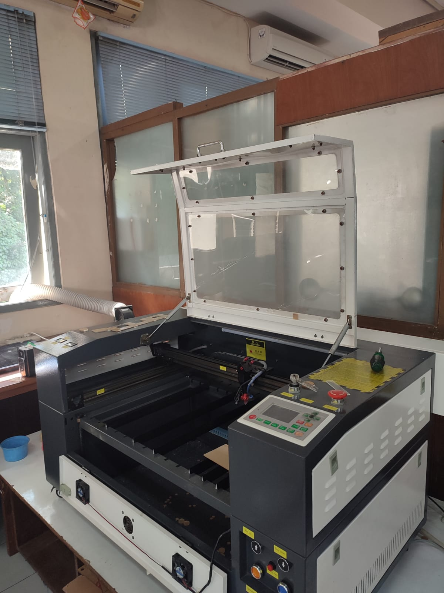
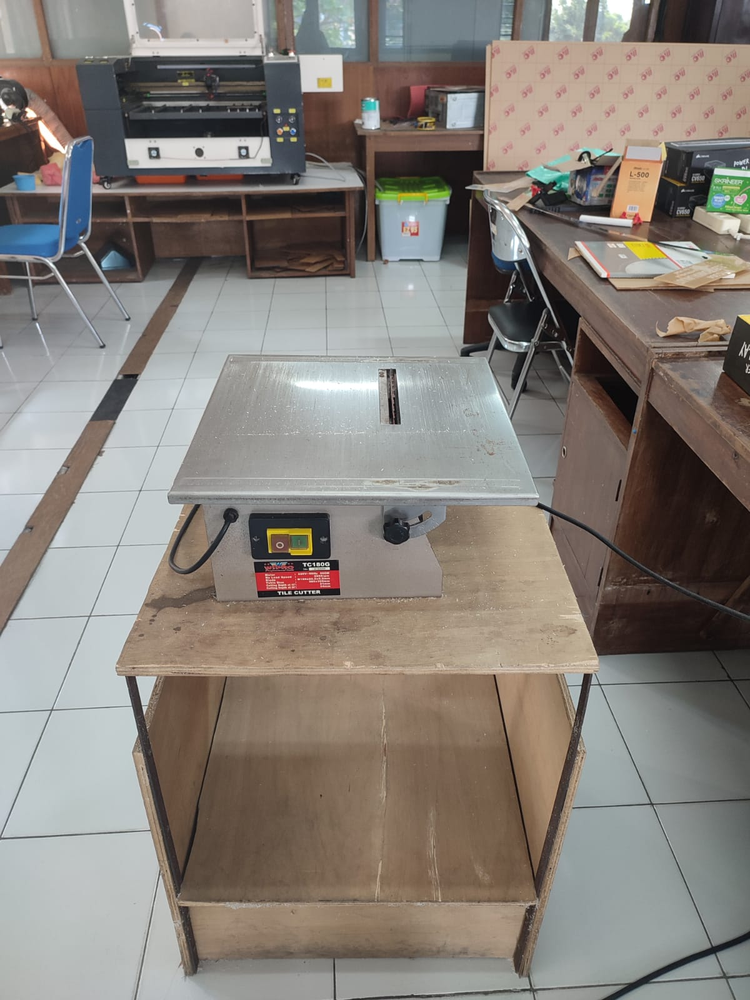

Pada hari Senin, 12 September 2022 kunjungan ke Lab Bengkel Elektrik
Tentang LAB BENGKEL ELEKTRIK : Kegiatan yang dicakup adalah sebagai tempat untuk mengembangkan daya cipta dan karya peserta didik, sehingga menghasilkan karya yang dapat bermanfaat, baik bagi peserta didik, prodi ataupun khalayak umum.
Laser cutting adalah sebuah teknologi yang menggunakan laser untuk memotong material dan biasanya diaplikasikan pada industri manufaktur. Laser cutting bekerja dengan cara mengarahkan laser berkekuatan tinggi untuk memotong material dan digunakan komputer untuk mengarahkannya. Biasanya dalam bentuk cahaya yang tidak dapat dilihat maupun dapat dilihat dengan mata normal.
Mesin Laser Cutting & Mesin Pemotong Akrilik Manual
 